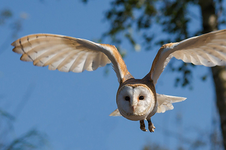

Jäger der Nacht
Europäischer Uhu

Der Uhu ist eine majestätische Eule und eine der größten Eulenarten weltweit. Er ist vor allem in Europa und Teilen Asiens verbreitet. Mit einer Flügelspannweite von bis zu 1,80 Metern ist er ein wahrer Gigant der Lüfte. Sein Federkleid variiert in verschiedenen Brauntönen und ist mit auffälligen weißen Flecken versehen, die ihm eine camouflageartige Tarnung in seiner natürlichen Umgebung ermöglichen.
Was den Uhu jedoch wirklich einzigartig macht, ist seine außergewöhnliche Jagdfähigkeit. Er ist ein ausgesprochener Nachtjäger, der sich in der Dunkelheit auf die Suche nach Beute begibt. Sein Gesicht ist von einem auffälligen Federkranz umgeben, der als Gesichtsschleier bekannt ist. Dieser Schleier und ermöglicht es ihm, Schallwellen zu erfassen und auch die kleinste Bewegung in der Dunkelheit wahrzunehmen.
Der Uhu ernährt sich hauptsächlich von Nagetieren wie Mäusen und Ratten, aber auch von Vögeln und anderen Kleintieren. Mit seinen scharfen Krallen und seinem kräftigen Schnabel ist er in der Lage, seine Beute effizient zu fangen und zu töten. Das markante "Uhu-Uhu" ist ein bekannter Ruf, den viele mit der mystischen Stimmung der nächtlichen Wälder in Verbindung bringen.
Der Uhu ist ein Einzelgänger und bewohnt verschiedene Lebensräume, von Felsklippen bis hin zu dichten Wäldern. Er ist ein standorttreues Tier und verteidigt sein Revier gegen andere Eulen und Eindringlinge. Lebensraumverlust und Umweltverschmutzung sind Gründe dafür, dass der Uhu vom Aussterben bedroht ist.
Um den Uhu zu schützen, sind verschiedene Naturschutzmaßnahmen erforderlich. Dazu gehören die Erhaltung und Wiederherstellung von geeigneten Lebensräumen sowie die Sensibilisierung der Menschen für den Schutz dieser beeindruckenden Eulenart. Naturschutzorganisationen arbeiten aktiv daran, den Uhu zu erforschen und Schutzmaßnahmen umzusetzen, um seine Zukunft zu sichern.

Schleiereule

Die Schleiereule (Tyto alba) ist eine faszinierende Eulenart, die aufgrund ihres charakteristischen Gesichtsschleiers und ihrer leisen Flugfähigkeit bekannt ist. Mit ihrem anmutigen Erscheinungsbild und ihrer einzigartigen Jagdstrategie hat die Schleiereule die Aufmerksamkeit von Naturbegeisterten auf der ganzen Welt auf sich gezogen. In diesem Artikel werden wir uns näher mit dieser bezaubernden Eule und ihren faszinierenden Eigenschaften beschäftigen.
Die Schleiereule ist in Europa, Asien, Afrika und Teilen Amerikas verbreitet. Ihr Federkleid ist überwiegend weiß mit einigen braunen Flecken und Streifen. Ihr markantes Merkmal ist jedoch der herzförmige Gesichtsschleier, der ihr den Namen "Schleiereule" verliehen hat. Dieser Gesichtsschleier dient dazu, Schallwellen zu erfassen und ermöglicht es der Eule, selbst die leisesten Geräusche in der Dunkelheit wahrzunehmen.
Als nachtaktiver Jäger ist die Schleiereule auf eine präzise Jagdstrategie angewiesen. Sie verlässt sich hauptsächlich auf ihr ausgezeichnetes Gehör, um ihre Beute zu orten. Ihre Flügel sind mit speziellen Federn ausgestattet, die eine lautlose Fortbewegung in der Luft ermöglichen. Dadurch kann sie sich unbemerkt an ihre Opfer heranschleichen und plötzlich zuschlagen. Ihre Beute besteht hauptsächlich aus Mäusen, Ratten und anderen Kleinsäugern.
Die Schleiereule brütet in Baumhöhlen, Ruinen, Scheunen oder anderen geschützten Bereichen. Sie legt eine kleine Anzahl von Eiern und beide Eltern kümmern sich um die Brut und die Aufzucht der Jungen. Die Eulen sind territorial und verteidigen ihr Revier gegen andere Eulen oder Eindringlinge.
Aufgrund des Verlusts von Lebensräumen und des Einsatzes von Pestiziden ist die Schleiereule jedoch in einigen Regionen gefährdet. Der Schutz und die Erhaltung ihrer Lebensräume sind daher von entscheidender Bedeutung, um das langfristige Überleben dieser faszinierenden Eulenart zu gewährleisten. Die Schleiereule hat auch eine reiche symbolische Bedeutung in verschiedenen Kulturen. In einigen Kulturen wird sie mit Weisheit, Wissen und Glück in Verbindung gebracht, während in anderen Kulturen ihr Ruf als schlechtes Omen angesehen wird. In der Tat hat die Schleiereule die menschliche Vorstellungskraft seit Jahrhunderten fasziniert und ist oft in Märchen und Mythen zu finden.
Insgesamt ist die Schleiereule eine faszinierende Eulenart, die uns mit ihrer Eleganz und ihren einzigartigen jagdlichen Fähigkeiten begeistert. Ihre Präsenz in der Natur ist wichtig, um das ökologische Gleichgewicht aufrechtzuerhalten. Lasst uns gemeinsam dafür sorgen, dass diese majestätische Jägerin der Nacht geschützt und bewundert wird, damit ihre Anwesenheit in unseren Landschaften auch in Zukunft erhalten bleibt.